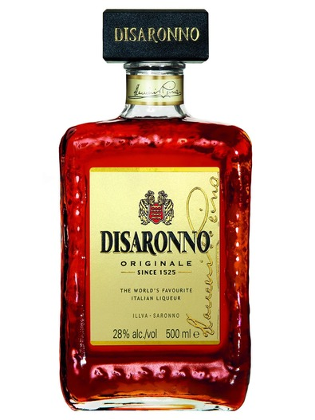
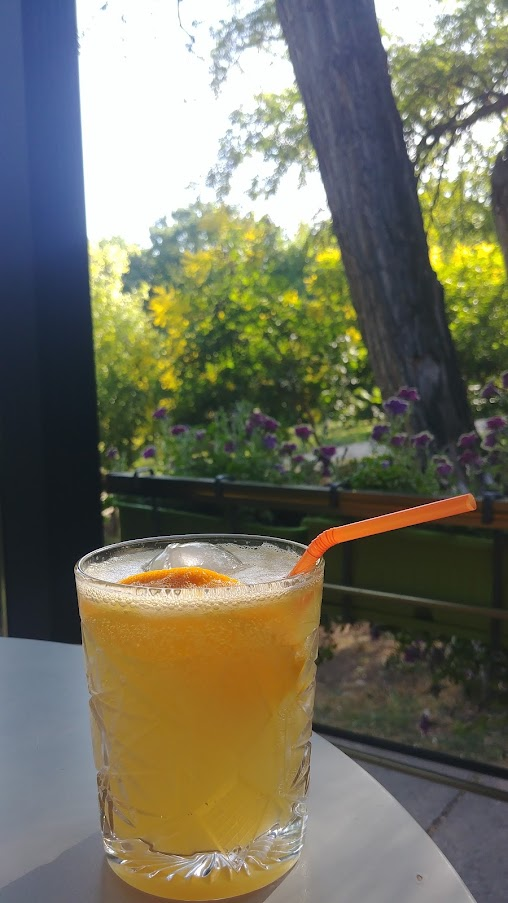
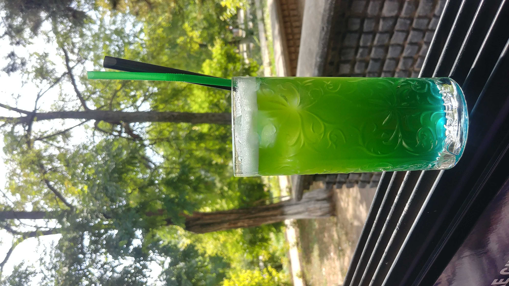
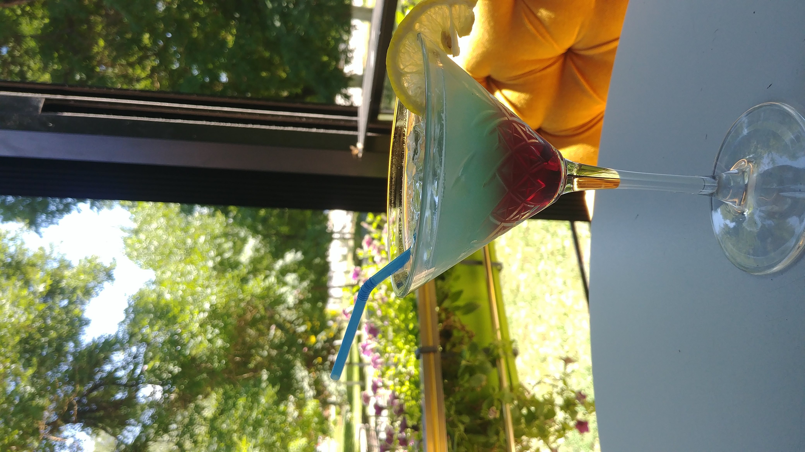
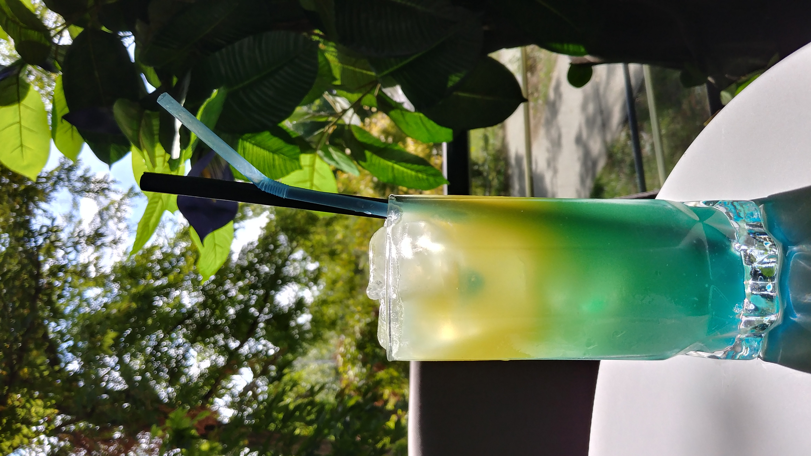

Two of my favourite old and classical cocktails to make and drink


Amaretto
The History of Amaretto
Amaretto is said to have originated in the town of Saronno in northern Italy,
roughly midway between Turin and Verona. One legend has it that in 1522 a church
in Saronno was having frescoes painted by an artist who was a pupil of Leonardo da Vinci.
He needed a model for the Madonna and chose a young widowed innkeeper.
She was so grateful that she gave him some apricot kernels that she had soaked in brandy
as a gift, and that was the birth of amaretto.
My favourite liqueur for specific taste cocktails.
My favourite liqueur for specific taste cocktails.
Amaretto Sour
As with amaretto, no-one knows for sure who came up with the first recipe for an Amaretto Sour.
It was somewhere in the USA and sometime in the 1970s, when Italian liquors were starting
to get better-known in America.
It was common then in bars to have a sour mix readily available, so if a customer asked for a then-fashionable Whiskey Sour, the bartender simply used the whiskey and the mix. Some bartender somewhere clearly wondered what it would taste like if you also added amaretto, or substituted amaretto for whiskey, and the cocktail was born.
It was common then in bars to have a sour mix readily available, so if a customer asked for a then-fashionable Whiskey Sour, the bartender simply used the whiskey and the mix. Some bartender somewhere clearly wondered what it would taste like if you also added amaretto, or substituted amaretto for whiskey, and the cocktail was born.

Bee's Knees
The Bee's Knees was invented by Frank Meier, an Austrian-born,
part Jewish bartender who was the first head bartender at the Ritz in
Paris in 1921, when its Cafe Parisian opened its doors.
A Bees Knees (or Bee's Knees) is a Prohibition Era cocktail made with gin, fresh lemon juice, and honey. It is served shaken and chilled, often with a lemon twist.
The name comes from prohibition-era slang meaning "the best".
A Bees Knees (or Bee's Knees) is a Prohibition Era cocktail made with gin, fresh lemon juice, and honey. It is served shaken and chilled, often with a lemon twist.
The name comes from prohibition-era slang meaning "the best".
And now some of my own new recipe improvised cocktails

Deep Jungle
I was inspired to make this cocktail after one of the usual guests wanted to try something new.
They wanted something with hints of sweet, sour and citrus fruits. It really made me think, of
many combinations, but I went safe and used vodka as a base alcohol, mixed with freshly squeezed orange,
a bit of store bought orange juice, Blue Curacao for the color and sweetness, topped off with
Triple Sec.
It came out perfect for the description and the customer loved it.
Times of the year with most orders of this cocktail:
It came out perfect for the description and the customer loved it.
Times of the year with most orders of this cocktail:
- Early Spring
- Late Fall

Sour Candy
From my own recipes, this Sour Candy cocktail is my favourite.
It doesn't contain any candy but it does taste like it. With the combination
of gin, freshly squeezed lemon juice, apple puree, and apple liqueur, topped off with
sour cherry liqueur, it is the perfect fruity combination for a hot summer day.

Pineapple Tropical
This one's origin is from the classic Piña Colada, with my own modifications to
the original recipe. The base for this cocktail is white rum, mixed in with
coconut puree and syrup, pineapple juice with a touch of Blue Curacao in the mix
topped off with orange juice.
It is very much on the sweeter side, but it still does provide the refreshment for
the summer.